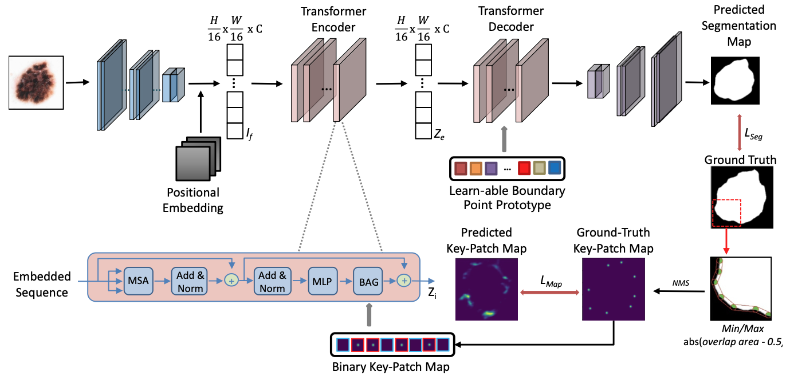

|
Lan Wei (魏蓝)
MS Student University of Science and Technology of China (USTC) Email: weilan [at] mail.ustc.edu.edu CV • Google Scholar • GitHub |
About
|
I am a second-year MS student in the School of Computer Science and Technology at the University of Science and Technology of China (USTC), AIoT Group, supervised by Prof. Nikolaos M. Freris. (2021 ~ Present)
|
News
Research
Multi-scale Graph Neural Network for Physics-informed Fluid Simulation | |
 |
Boundary-aware Transformers for Skin Lesion Segmentation |
A statistical approach in enhancing the volume prediction of ellipsoidal ham |
Teaching
|
Teaching Assistant, COMP6209P: Queuing Theory and Its Application in Computer Networks (2022 Fall, USTC) |
HuaWei Technology (2023.06 ~ Present): Graph Compression for large special Graphs.
I like photography and film. My favorite movie being Joe Wright's 2005 directorial masterpiece, Pride & Prejudice.
Project
Tencent Games (2022.09 ~ 2022.12): Optimize Unreal Engine rendering method for mobile device rendering.
Miscellaneous
I also enjoy hiking and playing badminton in my free time.
Lan Wei Last updated: Jun.1, 2023